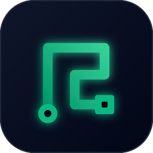

BoxMaper
Mapeador de instalaciones de domótica Loxone. Documenta bornes, módulos y conexiones, organiza edificios por plantas y exporta fichas a PDF, Excel y CSV. Funciona sin Internet.
Windows 10 / 11
Instalador .exe
Cargando…macOS
Apple Silicon e Intel
Cargando…Linux
AppImage o .deb
Cargando…Cómo instalarlo en Windows
- Descarga el instalador con el botón verde.
- Ábrelo con doble clic. No hace falta ser administrador.
- Si Windows muestra «Windows protegió su PC», pulsa Más información y luego Ejecutar de todas formas. Es normal en programas nuevos sin certificado de pago.
- Sigue los pasos del instalador. Se crean accesos directos en el escritorio y en el menú Inicio.
- Abre BoxMaper y empieza un proyecto nuevo.
Actualizaciones
Cuando haya una versión nueva, BoxMaper te lo avisará al abrirlo y se actualizará con un clic.
También puedes buscarlas desde Ayuda → Buscar actualizaciones.